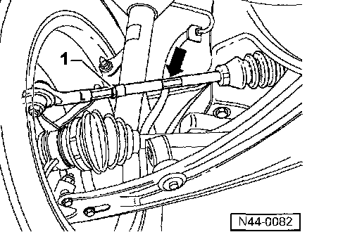

Thrust Angle (Deviation From Direction of Travel), Calculating
- If alignment readings for rear toe are both positive or both negative (+/+ or -/-), subtract smaller figure from larger figure to determine total toe angle, then divide by 2.
Left rear wheel toe Right rear wheel toe
+ 15' + 5'
15' - 5' = 10'
10' / 2 = 5'
Thrust angle (deviation from direction of travel) 5'
- Add figures with different prefix (+/-) and divide by 2.
Left rear wheel toe Right rear wheel toe
+ 15' - 5'
15' + 5' = 20'
20' / 2 = 10'
Thrust angle (deviation from direction of travel) 10'
Individual result is deviation of actual running direction from longitudinal center line of vehicle.
Front wheel toe, adjusting
If vehicle is out of specification, check trim height and balance if necessary refer to Testing and Inspection.

- Loosen lock nut -1-
- Adjust toe by turning tie rod (arrow) to left or right. Position wrench at nut (arrow) on tie rod.
Note:
Ensure tie rod boot is not twisted after adjustment has been completed. Twisted boots wear out quickly.
- Tighten lock nut -1- to 50 Nm (37 ft lb) and check toe again to ensure adjustment has not changed
If toe adjustment has not moved more than 2' from specification, adjustment is ok.
Steering lock (left/right), checking
Test required only if:
- Steering lock differentiates from center more than 2°.
- One side has contact between tire and component.
- Turning circle left/right differs

Distance between front axle components and tires (arrow) must be even at full lock (full turn left/right)
If an imbalance exists make correction by turning tie rod left/right.
Example:
Right steering lock smaller than left.
- Loosen lock nuts at tie rod ends.
- Turn left tie rod (unscrew tie rod end)
- Turn tie rod, right side equal amount to left but in opposite direction (turns tie rod end in).
- Check total toe.
After adjustment total toe must be within specification.
- Tighten lock nuts.

After tightening lock nut -1- it is possible for adjustment to vary slightly.
If value does not vary more than 2' from specification adjustment is ok.
- Ensure boots are not twisted after adjustments are completed.